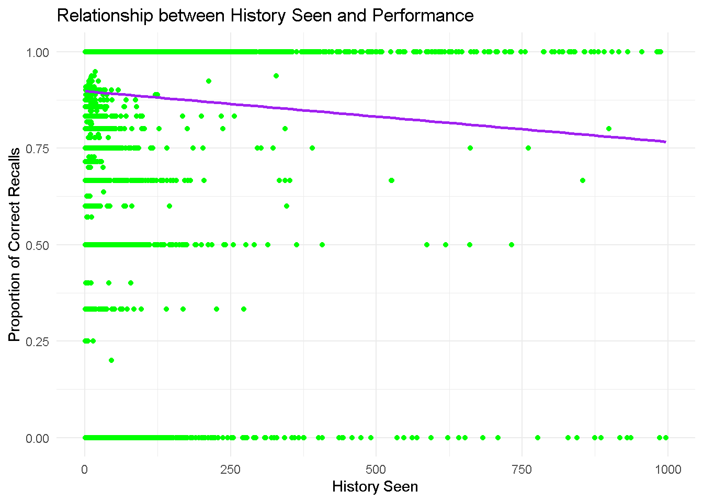
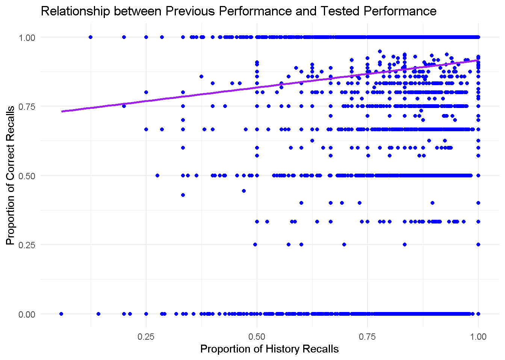
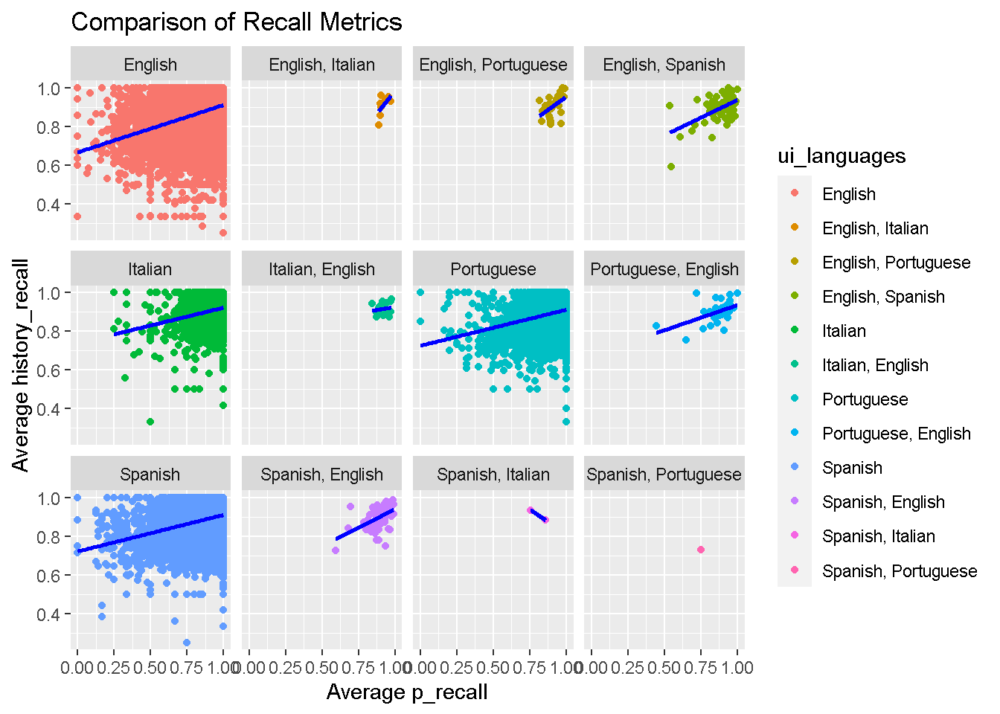

“Duolingo is an American educational technology company that produces learning apps and provides language certification. There main app is considered the most popular language learning app in the world.
To progress in their learning journey, each user of the application needs to complete a set of lessons in which they are presented with the words of the language they want to learn. In an infinite set of lessons, each word is applied in a different context and, on top of that, Duolingo uses a spaced repetition approach, where the user sees an already known word again to reinforce their learning.
Each line in this file refers to a Duolingo lesson that had a target word to practice.”
Questions for Exploration:
1. How effective is the spaced repetition approach employed by Duolingo?
2. Are there any patterns in user performance based on time since the last practice?
3. Does the user interface language affect the user’s performance?
4. What are the most challenging lexemes for users?
5. Is there any correlation between the user’s history with a word and their performance in the current session?
# Load necessary librarieslibrary(tidyverse)
Warning: package 'tidyverse' was built under R version 4.2.3
Warning: package 'ggplot2' was built under R version 4.2.3
Warning: package 'tibble' was built under R version 4.2.3
Warning: package 'tidyr' was built under R version 4.2.3
Warning: package 'readr' was built under R version 4.2.3
Warning: package 'purrr' was built under R version 4.2.3
Warning: package 'dplyr' was built under R version 4.2.3
Warning: package 'forcats' was built under R version 4.2.3
Warning: package 'lubridate' was built under R version 4.2.3
── Attaching core tidyverse packages ──────────────────────── tidyverse 2.0.0 ──
✔ dplyr 1.1.4 ✔ readr 2.1.5
✔ forcats 1.0.0 ✔ stringr 1.5.0
✔ ggplot2 3.4.2 ✔ tibble 3.2.1
✔ lubridate 1.9.3 ✔ tidyr 1.3.0
✔ purrr 1.0.2
── Conflicts ────────────────────────────────────────── tidyverse_conflicts() ──
✖ dplyr::filter() masks stats::filter()
✖ dplyr::lag() masks stats::lag()
ℹ Use the conflicted package (<http://conflicted.r-lib.org/>) to force all conflicts to become errors
library(readr)library(stringr)
# Set working directory if neededsetwd("C:/Users/kvho5/OneDrive/Documents/LING343/O_hp1")# Define the path to the compressed filecompressed_file <-"C:/Users/kvho5/OneDrive/Documents/LING343/O_hp1/settles.acl16.learning_traces.13m.csv.gz"# Define the path where you want to extract the Coutput_directory <-"C:/Users/kvho5/OneDrive/Documents/LING343/O_hp1/"# Unzipping the fileunzip(compressed_file, exdir = output_directory)
Warning in unzip(compressed_file, exdir = output_directory): error 1 in
extracting from zip file
# Defining the path to the unzipped CSV fileunzipped_file <-"C:/Users/kvho5/OneDrive/Documents/LING343/O_hp1/settles.acl16.learning_traces.13m.csv.gz"# Reading the CSV fileduo_data <-read_csv(unzipped_file)
Rows: 12854226 Columns: 12
── Column specification ────────────────────────────────────────────────────────
Delimiter: ","
chr (5): user_id, learning_language, ui_language, lexeme_id, lexeme_string
dbl (7): p_recall, timestamp, delta, history_seen, history_correct, session_...
ℹ Use `spec()` to retrieve the full column specification for this data.
ℹ Specify the column types or set `show_col_types = FALSE` to quiet this message.
# Displaying the first few rows of the datasethead(duo_data)
# A tibble: 6 × 12
p_recall timestamp delta user_id learning_language ui_language lexeme_id
<dbl> <dbl> <dbl> <chr> <chr> <chr> <chr>
1 1 1362076081 27649635 u:FO de en 76390c1350…
2 0.5 1362076081 27649635 u:FO de en 7dfd7086f3…
3 1 1362076081 27649635 u:FO de en 35a54c25a2…
4 0.5 1362076081 27649635 u:FO de en 0cf63ffe3d…
5 1 1362076081 27649635 u:FO de en 84920990d7…
6 1 1362076081 27649635 u:FO de en 56429751fd…
# ℹ 5 more variables: lexeme_string <chr>, history_seen <dbl>,
# history_correct <dbl>, session_seen <dbl>, session_correct <dbl>
# Checking what are the names and data types of each columnspec(duo_data)
p_recall - proportion of exercises from this lesson/practice where the word/lexeme was correctly recalled
timestamp - UNIX timestamp of the current lesson/practice
delta - time (in seconds) since the last lesson/practice that included this word/lexeme
user_id - student user ID who did the lesson/practice (anonymized)
learning_language - language being learned
ui_language - user interface language (presumably native to the student)
lexeme_id - system ID for the lexeme tag (i.e., word)
lexeme_string - lexeme tag (see below)
history_seen - total times user has seen the word/lexeme prior to this lesson/practice
history_correct - total times user has been correct for the word/lexeme prior to this lesson/practice
session_seen - times the user saw the word/lexeme during this lesson/practice
session_correct - times the user got the word/lexeme correct during this lesson/practice
The lexeme_string column contains a string representation of the “lexeme tag” used by Duolingo for each lesson/practice (data instance) in our experiments. The lexeme_string field uses the following format:
`surface-form/lemma”
Data Cleaning and Tidying
In this step, I will be handling missing values, renaming variables (if needed), and setting appropriate variable types.
# Checking for missing valuessum(is.na(duo_data))
[1] 0
# Output: 0 so there are no missing values.# No renaming needed# Setting appropriate variable typesduo_data$timestamp <-as.POSIXct(duo_data$timestamp, origin ="1970-01-01")duo_data$user_id <-as.factor(duo_data$user_id)duo_data$learning_language <-as.factor(duo_data$learning_language)duo_data$ui_language <-as.factor(duo_data$ui_language)duo_data$lexeme_id <-as.factor(duo_data$lexeme_id)# Checking what are the languages found in the data setunique_learning_languages <-unique(duo_data$learning_language)unique_learning_languages
# Using mutate and functions from stringr to change the language abbreviations to it's full name# Replacing learning_language abbreviations with full namesduo_data <-mutate(duo_data,learning_language =str_replace(learning_language, "de", "German"),learning_language =str_replace(learning_language, "en", "English"),learning_language =str_replace(learning_language, "es", "Spanish"),learning_language =str_replace(learning_language, "fr", "French"),learning_language =str_replace(learning_language, "it", "Italian"),learning_language =str_replace(learning_language, "pt", "Portuguese"))# Replacing ui_language abbreviations with full namesduo_data <-mutate(duo_data,ui_language =str_replace(ui_language, "en", "English"),ui_language =str_replace(ui_language, "es", "Spanish"),ui_language =str_replace(ui_language, "it", "Italian"),ui_language =str_replace(ui_language, "pt", "Portuguese"))head(duo_data)
# A tibble: 6 × 12
p_recall timestamp delta user_id learning_language ui_language
<dbl> <dttm> <dbl> <fct> <chr> <chr>
1 1 2013-02-28 13:28:01 27649635 u:FO German English
2 0.5 2013-02-28 13:28:01 27649635 u:FO German English
3 1 2013-02-28 13:28:01 27649635 u:FO German English
4 0.5 2013-02-28 13:28:01 27649635 u:FO German English
5 1 2013-02-28 13:28:01 27649635 u:FO German English
6 1 2013-02-28 13:28:01 27649635 u:FO German English
# ℹ 6 more variables: lexeme_id <fct>, lexeme_string <chr>, history_seen <dbl>,
# history_correct <dbl>, session_seen <dbl>, session_correct <dbl>
# Checking the structure of the datasetstr(duo_data)
# Creating a new column with the history_recall ratioduo_data <- duo_data |>mutate(history_recall = history_correct / history_seen)# Viewing the updated data framehead(duo_data)
# A tibble: 6 × 13
p_recall timestamp delta user_id learning_language ui_language
<dbl> <dttm> <dbl> <fct> <chr> <chr>
1 1 2013-02-28 13:28:01 27649635 u:FO German English
2 0.5 2013-02-28 13:28:01 27649635 u:FO German English
3 1 2013-02-28 13:28:01 27649635 u:FO German English
4 0.5 2013-02-28 13:28:01 27649635 u:FO German English
5 1 2013-02-28 13:28:01 27649635 u:FO German English
6 1 2013-02-28 13:28:01 27649635 u:FO German English
# ℹ 7 more variables: lexeme_id <fct>, lexeme_string <chr>, history_seen <dbl>,
# history_correct <dbl>, session_seen <dbl>, session_correct <dbl>,
# history_recall <dbl>
I will also be making a new data frame that encompass data focused on each unique user_ids rather than target word
# Calculating the avg of history_recall and p_recall of all tested words for each user_iduser_summary <- duo_data |>group_by(user_id) |>summarize(avg_history_recall =mean(history_recall, na.rm =TRUE),avg_p_recall =mean(p_recall, na.rm =TRUE)) |>ungroup()user_summary
# Reshaping the summarized data to wide format using pivot_wider()wide_data <- user_summary |>pivot_wider(names_from = user_id, values_from =c(avg_history_recall, avg_p_recall))head(wide_data)
# Reshaping the wide-format data to long format using pivot_longer()#long_data <- wide_data |>#pivot_longer(cols = starts_with("avg_"), #names_to = c(".value", "type", "identifier"), #names_sep = ":--",#values_to = "value")# View the long-format data#head(long_data)
# Calculate the number of times each unique user_id appears in duo_datauser_counts <- duo_data %>%group_by(user_id) %>%summarize(num_occurrences =n())# Calculate the average delta for each user_idavg_delta <- duo_data %>%group_by(user_id) %>%summarize(avg_delta =mean(delta, na.rm =TRUE))user_summary <-left_join(user_summary, user_counts, by ="user_id")user_summary <-left_join(user_summary, avg_delta, by ="user_id")
Min. 1st Qu. Median Mean 3rd Qu. Max.
0.0000 0.8310 0.9013 0.8674 0.9746 1.0000
# Histogram to explore the distribution of avg_p_recallhist(spaced_repetition_effectiveness$avg_p_recall, breaks =20, main ="Distribution of avg_p_recall", xlab ="avg_p_recall")
Considering the histogram is skewed left, it appears that the participants are recalling most of the words correctly. The mean of all average proportion session recalls is 0.8674 while the median exists at a high 0.9013. Therefore, the spaced repetition approach employed by Duolingo appears to be arguably effective. However, we should also look further into the different types of variables and how they may potentially affect the learning performances
2. Are there any patterns in user performance based on time since the last practice?
# We are going to be using the sample size 5000 because the original data frame has over 1.2 million observations and it will take too long for the plot codes to load with that data sizesample_size <-50000# Adjust as needed# The original dataset is too large to efficiently plot every valuesampled_data <-sample_n(duo_data, sample_size)performance_vs_delta <- sampled_data |>ggplot(aes(x = delta, y = p_recall)) +geom_point(color ="blue") +geom_smooth(method ="lm", se =FALSE, color ="red") +labs(x ="Time Since Last Practice (seconds)", y ="Proportion of Correct Recalls", title ="User Performance vs Time Since Last Practice")# Display the plotperformance_vs_delta
`geom_smooth()` using formula = 'y ~ x'
The performance_vs_delta graph shows there is a slight negative connotation between performance and the time since the last practice.
Bonus sub-question: Are participants more likely to recall a word with shorter spaced repetition time intervals?
# Create ggplot for avg_p_recall vs avg_delta with smoothed lineplot_spaced_rep <-ggplot(user_summary, aes(x = avg_delta, y = avg_p_recall)) +geom_point() +geom_smooth(method ="lm", se =FALSE) +# Add a linear regression line without confidence intervallabs(x ="Average Delta", y ="Average p_recall", title ="Average p_recall vs. Average Delta")plot_spaced_rep
`geom_smooth()` using formula = 'y ~ x'
According to the graph above, users generally perform better when the spaced repetition time intervals are shorter. This observation holds true across a range of delta values, from 0 seconds to up to 463 days. It implies that users may experience improved learning outcomes with consistent and frequent study sessions on Duolingo.
3. Does the user interface language affect the user’s performance?
ggplot(ui_language_performance, aes(x = ui_language, y = avg_p_recall)) +geom_bar(stat ="identity", fill ="skyblue", na.rm =TRUE) +theme_minimal() +labs(x ="User Interface Language", y ="Average Proportion of Correct Recalls", title ="Impact of User Interface Language on Performance") +coord_cartesian(ylim =c(0.85, 1))
It seems that there is minimal variation in user performance across different user interface languages, as indicated by the low standard deviation observed for all languages. Furthermore, the plot depicting performance by language reveals only subtle differences between the bars, which become more apparent when zooming in on the range between 0.85 and 1.
Arguably, users who have Italian set as their user interface language exhibit slightly better performance compared to users with other languages.
Still, the differences are really minimal.
I am going to add new columns to our user_summary data frame. I will be specifying the languages each user is learning and the languages they use in their UI. This will be used when answering question 5.
user_learning <-distinct(duo_data, user_id, learning_language)user_learning <- user_learning |>group_by(user_id) |>summarize(learning =toString(learning_language))user_summary <- user_summary |>left_join(user_learning, by ="user_id")user_ui_language <-distinct(duo_data, user_id, ui_language)user_ui_language <- user_ui_language |>group_by(user_id) |>summarize(ui_languages =toString(ui_language))# Merge the ui_language information into user_summaryuser_summary <- user_summary |>left_join(user_ui_language, by ="user_id")user_summary
Bonus sub-question: what type of words are participants are having most difficulty recalling?
# Merge top_challenging_lexemes with duo_data to get lexeme_stringchallenging_lexemes_with_string <- top_challenging_lexemes |>left_join(duo_data, by ="lexeme_id") |>select(lexeme_id, lexeme_string, p_recall)# View the correlated lexeme_id and lexeme_stringchallenging_lexemes_with_string
Let’s find the most common sub strings (only alphabetical letters) that exists between < and > in lexeme_string. These sub strings usually tells us what kind of word did the user encounter in their duolingo exercise context. Was it a noun? verb? plural? singular? etc.
substrings <-str_extract_all(challenging_lexemes_with_string$lexeme_string, "(?<=<)[^<>]+(?=>)")# Flatten the list of sub stringsall_substrings <-unlist(substrings)# Count the frequency of each sub stringsubstring_counts <-table(all_substrings)# Sort the sub strings by frequency in descending ordersorted_substrings <-sort(substring_counts, decreasing =TRUE)top_10_substrings <-head(sorted_substrings, 10)top_10_substrings
all_substrings
n sg vblex *numb *sf f pl m pri p3
65 42 38 37 37 34 34 27 18 13
Here’s a breakdown of what each of the top 10 sub string tells about a word:
n: noun,
sg: singular form,
vblex: verb,
lexemes. *numb: related to numbers,
sf: the surface form is the same as the base form,
f: feminine gender,
pl: plural form,
m: masculine gender,
pri: primary form,
p3: third person singular,
These top 10 sub strings suggest that Duolingo users in this data set may be encountering most difficulties with nouns, verbs, gender distinctions, and possibly numerical concepts in their language learning exercises.
5. Is there any correlation between the user’s history with a word and their performance in the current session?
history_vs_performance <- sampled_data |>ggplot(aes(x = history_seen, y = p_recall)) +geom_point(color ="green") +geom_smooth(method ="lm", se =FALSE, color ="purple") +theme_minimal() +labs(x ="History Seen", y ="Proportion of Correct Recalls", title ="Relationship between History Seen and Performance")# Displaying the plothistory_vs_performance
`geom_smooth()` using formula = 'y ~ x'
It appears there are outliers (above 1000) for history_seen
#Using filter to make a subset and remove the one outlier above 10000duo_data_filtered <- duo_data |>filter(history_seen <=1000)# Now 'duo_data_filtered' contains the data without outliers where a word has been seen over 1000 timessamp_data <-sample_n(duo_data_filtered, sample_size)hist_vs_performance <- samp_data |>ggplot(aes(x = history_seen, y = p_recall)) +geom_point(color ="green") +geom_smooth(method ="lm", se =FALSE, color ="purple") +theme_minimal() +labs(x ="History Seen", y ="Proportion of Correct Recalls", title ="Relationship between History Seen and Performance")hist_vs_performance
`geom_smooth()` using formula = 'y ~ x'

Surprisingly, there is also a slight negative relation between a user’s ability to recall a word and the number of times the word has already been studied/seen. Perhaps certain words are too difficult. Thus, a user may require more repetitions to fully learn the word(?). After all, it is common for the duolingo algorithm to show a word less if the user has a high recall rate on it after a few tries.
What if a user’s performance and training is not dependent on repetition but their previous accuracy score on the word?
historyrecall_vs_performance <- sampled_data |>ggplot(aes(x = history_recall, y = p_recall)) +geom_point(color ="blue") +geom_smooth(method ="lm", se =FALSE, color ="purple") +theme_minimal() +labs(x ="Proportion of History Recalls", y ="Proportion of Correct Recalls", title ="Relationship between Previous Performance and Tested Performance")historyrecall_vs_performance
`geom_smooth()` using formula = 'y ~ x'

The above graph suggests that for many words, a user’s session performance is correlated to the user’s history performance
How about we assess each user’s overall average performances
# Comparing avg_p_recall and avg_history_recall for each user_iduser_perfom <-ggplot(user_summary, aes(x = avg_p_recall, y = avg_history_recall)) +geom_point() +geom_smooth(method ="lm", se =FALSE, color ="blue") +labs(x ="Average p_recall", y ="Average history_recall", title ="Comparison of Recall Metrics")user_perfom
`geom_smooth()` using formula = 'y ~ x'
There is strong evidence suggesting that participants tend to perform well on their session recalls when they also excel in their history recalls.
Let’s remake the graph that shows the different types of UI languages
user_perform <-ggplot(user_summary, aes(x = avg_p_recall, y = avg_history_recall, color = ui_languages)) +geom_point() +geom_smooth(method ="lm", se =FALSE, color ="blue")labs(x ="Average p_recall", y ="Average history_recall", title ="Comparison of Recall Metrics")
user_perform <-ggplot(user_summary, aes(x = avg_p_recall, y = avg_history_recall, color = ui_languages)) +geom_point() +geom_smooth(method ="lm", se =FALSE, color ="blue") +labs(x ="Average p_recall", y ="Average history_recall", title ="Comparison of Recall Metrics") +facet_wrap(~ ui_languages)user_perform
`geom_smooth()` using formula = 'y ~ x'

Overall, the separate plots indicate a consistent trend across various native speakers: participants tend to demonstrate strong performance in their session recalls when they already exhibit proficiency in their history recalls.
Summary: Main Findings
The spaced repetition approach employed by Duolingo appears effective, as indicated by high proportions of correct word recalls.
User performance tends to decrease slightly with longer intervals since the last practice session, suggesting better performance with shorter intervals. Users generally perform better with shorter spaced repetition time intervals, implying improved learning outcomes with consistent study sessions.
The user interface language has minimal impact on user performance, with subtle differences observed among languages. However, users with Italian set as their UI language exhibit slightly better performance.
The most challenging words for users include nouns, verbs, and gender distinctions, suggesting difficulty with these concepts.
There’s a slight negative correlation between a user’s history with a word and their performance in the current session, indicating the need for more repetitions for certain words. On average, however, for each user, users tend to perform well in current sessions when they excel in previous ones, regardless of language or UI language.